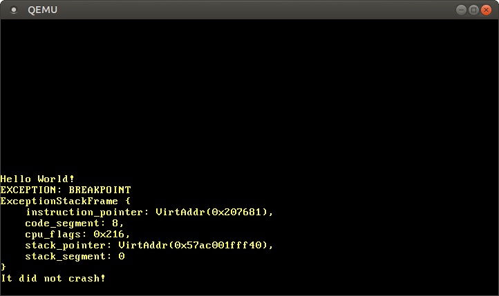

CPU例外
この記事は翻訳されたものです： この記事はCPU Exceptionsをコミュニティの手により翻訳したものです。そのため、翻訳が完全・最新でなかったり、原文にない誤りを含んでいる可能性があります。問題があればこのissue上で報告してください！
翻訳者： @woodyZootopia.
CPU例外は、例えば無効なメモリアドレスにアクセスしたときやゼロ除算したときなど、様々なミスによって発生します。それらに対処するために、ハンドラ関数を提供する 割り込み記述子表 を設定しなくてはなりません。この記事を読み終わる頃には、私達のカーネルはブレークポイント例外を捕捉し、その後通常の実行を継続できるようになっているでしょう。
このブログの内容は GitHub 上で公開・開発されています。何か問題や質問などがあれば issue をたててください (訳注: リンクは原文(英語)のものになります)。またこちらにコメントを残すこともできます。この記事の完全なソースコードはpost-05 ブランチにあります。
目次
🔗概要
例外とは、今実行している命令はなにかおかしいぞ、ということを示すものです。例えば、現在の命令がゼロ除算を実行しようとしているとき、CPUは例外を発します。例外が起こると、CPUは現在行われている作業に割り込み、例外の種類に従って、即座に特定の例外ハンドラ関数を呼びます。
x86には20種類のCPU例外があります。中でも重要なものは：
- ページフォルト: ページフォルトは不正なメモリアクセスの際に発生します。例えば、現在の命令がマップされていないページから読み込もうとしたり、読み込み専用のページに書き込もうとしたときに生じます。
- 無効な命令コード: この例外は現在の命令が無効であるときに発生します。例えば、SSE命令という新しい命令をサポートしていない旧式のCPU上でこれを実行しようとしたときに生じます。
- 一般保護違反: これは、例外の中でも、最もいろいろな理由で発生しうるものです。ユーザーレベルのコードで特権命令を実行しようとしたときや、設定レジスタの保護領域に書き込もうとしたときなど、様々な種類のアクセス違反によって生じます。
- ダブルフォルト: 何らかの例外が起こったとき、CPUは対応するハンドラ関数を呼び出そうとします。 この例外ハンドラを 呼び出している間に 別の例外が起こった場合、CPUはダブルフォルト例外を出します。この例外はまた、ある例外に対してハンドラ関数が登録されていないときにも起こります。
- トリプルフォルト: CPUがダブルフォルトのハンドラ関数を呼び出そうとしている間に例外が発生すると、CPUは トリプルフォルト という致命的な例外を発します。トリプルフォルトを捕捉したり処理したりすることはできません。これが起こると、多くのプロセッサは自らをリセットしてOSを再起動することで対応します。
例外の完全な一覧を見たい場合は、OSDev wikiを見てください。
🔗割り込み記述子表
例外を捕捉し処理するためには、いわゆる割り込み記述子表 (Interrupt Descriptor Table, IDT) を設定しないといけません。この表にそれぞれのCPU例外に対するハンドラ関数を指定することができます。ハードウェアはこの表を直接使うので、決められたフォーマットに従わないといけません。それぞれのエントリは以下の16バイトの構造を持たなければなりません：
| 型 | 名前 | 説明 |
|---|---|---|
| u16 | 関数ポインタ [0:15] | ハンドラ関数へのポインタの下位ビット。 |
| u16 | GDTセレクタ | 大域記述子表 (Global Descriptor Table) におけるコードセグメントのセレクタ。 |
| u16 | オプション | （下を参照） |
| u16 | 関数ポインタ [16:31] | ハンドラ関数へのポインタの中位ビット。 |
| u32 | 関数ポインタ [32:63] | ハンドラ関数へのポインタの上位ビット。 |
| u32 | 予約済 |
オプション部は以下のフォーマットになっています：
| ビット | 名前 | 説明 |
|---|---|---|
| 0-2 | 割り込みスタックテーブルインデックス | 0ならスタックを変えない。1から7なら、ハンドラが呼ばれたとき、割り込みスタック表のその数字のスタックに変える。 |
| 3-7 | 予約済 | |
| 8 | 0: 割り込みゲート、1: トラップゲート | 0なら、このハンドラが呼ばれたとき割り込みは無効化される。 |
| 9-11 | 1にしておかないといけない | |
| 12 | 0にしておかないといけない | |
| 13‑14 | 記述子の特権レベル (DPL) | このハンドラを呼ぶ際に必要になる最低限の特権レベル。 |
| 15 | Present |
それぞれの例外がIDTの何番目に対応するかは事前に定義されています。例えば、「無効な命令コード」の例外は6番目で、「ページフォルト」例外は14番目です。これにより、ハードウェアがそれぞれの例外に対応するIDTの設定を（特に設定の必要なく）自動的に読み出せるというわけです。OSDev wikiの「例外表」の “Vector nr.” 列に、すべての例外についてIDTの何番目かが記されています。
例外が起こると、ざっくりCPUは以下のことを行います：
- 命令ポインタとRFLAGSレジスタ（これらの値は後で使います）を含むレジスタをスタックにプッシュする。
- 割り込み記述子表から対応するエントリを読む。例えば、ページフォルトが起こったときはCPUは14番目のエントリを読む。
- エントリが存在しているのかチェックする。そうでなければダブルフォルトを起こす。
- エントリが割り込みゲートなら（40番目のビットが0なら）ハードウェア割り込みを無効にする。
- 指定されたGDTセレクタをCSセグメントに読み込む。
- 指定されたハンドラ関数にジャンプする。
ステップ4と5について今深く考える必要はありません。今後の記事で大域記述子表 (Global Descriptor Table, 略してGDT) とハードウェア割り込みについては学んでいきます。
🔗IDT型
自前でIDTの型を作る代わりに、x86_64クレートのInterruptDescriptorTable構造体を使います。こんな見た目をしています：
#[repr(C)]
pub struct InterruptDescriptorTable {
pub divide_by_zero: Entry<HandlerFunc>,
pub debug: Entry<HandlerFunc>,
pub non_maskable_interrupt: Entry<HandlerFunc>,
pub breakpoint: Entry<HandlerFunc>,
pub overflow: Entry<HandlerFunc>,
pub bound_range_exceeded: Entry<HandlerFunc>,
pub invalid_opcode: Entry<HandlerFunc>,
pub device_not_available: Entry<HandlerFunc>,
pub double_fault: Entry<HandlerFuncWithErrCode>,
pub invalid_tss: Entry<HandlerFuncWithErrCode>,
pub segment_not_present: Entry<HandlerFuncWithErrCode>,
pub stack_segment_fault: Entry<HandlerFuncWithErrCode>,
pub general_protection_fault: Entry<HandlerFuncWithErrCode>,
pub page_fault: Entry<PageFaultHandlerFunc>,
pub x87_floating_point: Entry<HandlerFunc>,
pub alignment_check: Entry<HandlerFuncWithErrCode>,
pub machine_check: Entry<HandlerFunc>,
pub simd_floating_point: Entry<HandlerFunc>,
pub virtualization: Entry<HandlerFunc>,
pub security_exception: Entry<HandlerFuncWithErrCode>,
// いくつかのフィールドは省略している
}
この構造体のフィールドはidt::Entry<F>という型を持っています。これはIDTのエントリのフィールド（上の表を見てください）を表す構造体です。型パラメータFは、期待されるハンドラ関数の型を表します。エントリの中には、HandlerFunc型を要求するものや、HandlerFuncWithErrCode型を要求するものがあることがわかります。ページフォルトに至っては、PageFaultHandlerFuncという自分専用の型を要求していますね。
まずHandlerFunc型を見てみましょう：
type HandlerFunc = extern "x86-interrupt" fn(_: InterruptStackFrame);
これは、extern "x86-interrupt" fn型への型エイリアスです。externは外部呼び出し規約に従う関数を定義するのに使われ、おもにC言語のコードと連携したいときに使われます (extern "C" fn) 。しかし、x86-interrupt呼び出し規約とは何なのでしょう？
🔗例外の呼び出し規約
例外は関数呼び出しと非常に似ています。CPUが呼び出された関数の最初の命令にジャンプし、それを実行します。その後、CPUはリターンアドレスにジャンプし、親関数の実行を続けます。
しかし、例外と関数呼び出しには大きな違いが一つあるのです：関数呼び出しはコンパイラによって挿入されたcall命令によって自発的に引き起こされますが、例外は どんな命令の実行中でも 起こる可能性があるのです。この違いの結果を理解するためには、関数呼び出しについてより詳しく見ていく必要があります。
呼び出し規約は関数呼び出しについて事細かく指定しています。例えば、関数のパラメータがどこに置かれるべきか（例えば、レジスタなのかスタックなのか）や、結果がどのように返されるべきかを指定しています。x86_64上のLinuxでは、C言語の関数に関しては以下のルールが適用されます（これはSystem V ABIで指定されています）：
- 最初の6つの整数引数は、レジスタ
rdi,rsi,rdx,rcx,r8,r9で渡される - 追加の引数はスタックで渡される
- 結果は
raxとrdxで返される
注意してほしいのは、RustはC言語のABIに従っていない（実は、RustにはABIすらまだありません）ので、このルールはextern "C" fnと宣言された関数にしか適用されないということです。
🔗PreservedレジスタとScratchレジスタ
呼び出し規約はレジスタを2種類に分けています：preservedレジスタとscratchレジスタです。
preservedレジスタの値は関数呼び出しの前後で変化してはいけません。ですので、呼び出された関数（訳注：callの受け身で“callee“と呼ばれます）は、リターンする前にその値をもとに戻す場合に限り、その値を上書きできます。そのため、これらのレジスタはcallee-savedと呼ばれます。よくとられる方法は、関数の最初でそのレジスタをスタックに保存し、リターンする直前にその値をもとに戻すことです。
それとは対照的に、呼び出された関数はscratchレジスタを何の制限もなく上書きすることができます。呼び出し元の関数がscratchレジスタの値を関数呼び出しの前後で保存したいなら、関数呼び出しの前に自分で（スタックにプッシュするなどして）バックアップしておいて、もとに戻す必要があります。なので、scratchレジスタはcaller-savedです。
x86_64においては、C言語の呼び出し規約は以下のpreservedレジスタとscratchレジスタを指定します：
| preservedレジスタ | scratchレジスタ |
|---|---|
rbp, rbx, rsp, r12, r13, r14, r15 | rax, rcx, rdx, rsi, rdi, r8, r9, r10, r11 |
| callee-saved | caller-saved |
コンパイラはこれらのルールを知っているので、それにしたがってコードを生成します。例えば、ほとんどの関数はpush rbpから始まるのですが、これはrbpをスタックにバックアップしているのです（rbpはcallee-savedなレジスタであるため）。
🔗すべてのレジスタを保存する
関数呼び出しとは対象的に、例外は どんな命令の最中にも 起きる可能性があります。多くの場合、生成されたコードが例外を引き起こすのかどうかは、コンパイル時には見当も付きません。例えば、コンパイラはある命令がスタックオーバーフローやページフォルトを起こすのか知ることができません。
いつ例外が起きるのかわからない以上、レジスタを事前にバックアップしておくことは不可能です。つまり、caller-savedレジスタを利用する呼び出し規約は、例外ハンドラには使えないということです。代わりに、 すべてのレジスタを 保存する規約を使わないといけません。x86-interrupt呼び出し規約はそのような呼び出し規約なので、関数が戻るときにすべてのレジスタが元の値に戻されることを保証してくれるというわけです。
これは、関数の初めにすべてのレジスタがスタックに保存されるということを意味しないことに注意してください。その代わりに、コンパイラは関数によって上書きされてしまうレジスタのみをバックアップします。こうすれば、数個のレジスタしか使わない短い関数に対して、とても効率的なコードが生成できるでしょう。
🔗割り込み時のスタックフレーム
通常の関数呼び出し（call命令を使います）においては、CPUは対象の関数にジャンプする前にリターンアドレスをプッシュします。関数がリターンするとき（ret命令を使います）、CPUはこのリターンアドレスをポップし、そこにジャンプします。そのため、通常の関数呼び出しの際のスタックフレームは以下のようになっています：

しかし、例外と割り込みハンドラについては、リターンアドレスをプッシュするだけではだめです。なぜなら、割り込みハンドラはしばしば（スタックポインタや、CPUフラグなどが）異なる状況で実行されるからです。ですので、代わりに、CPUは割り込みが起こると以下の手順を実行します。
- スタックポインタをアラインする: 割り込みはあらゆる命令において発生しうるので、スタックポインタもあらゆる値を取る可能性があります。しかし、CPU命令のうちいくつか（例えばSSE命令の一部など）はスタックポインタが16バイトの倍数になっていることを要求するので、そうなるようにCPUは割り込みの直後にスタックポインタを揃えます。
- （場合によっては）スタックを変更する: スタックの変更は、例えばCPU例外がユーザーモードのプログラムで起こった場合のような、CPUの特権レベルを変更するときに起こります。いわゆる割り込みスタック表を使うことで、特定の割り込みに対しスタックを変更するよう設定することも可能です。割り込みスタック表については次の記事で説明します。
- 古いスタックポインタをプッシュする: CPUは、割り込みが発生した際の（アラインされる前の）スタックポインタレジスタ（
rsp）とスタックセグメントレジスタ（ss）の値をプッシュします。これにより、割り込みハンドラからリターンしてきたときにもとのスタックポインタを復元することが可能になります。 RFLAGSレジスタをプッシュして更新する:RFLAGSレジスタは状態や制御のための様々なビットを保持しています。割り込みに入るとき、CPUはビットのうちいくつかを変更し古い値をプッシュしておきます。- 命令ポインタをプッシュする: 割り込みハンドラ関数にジャンプする前に、CPUは命令ポインタ（
rip）とコードセグメント（cs）をプッシュします。これは通常の関数呼び出しにおける戻り値のプッシュに対応します。 - （例外によっては）エラーコードをプッシュする: ページフォルトのような特定の例外の場合、CPUはエラーコードをプッシュします。これは、例外の原因を説明するものです。
- 割り込みハンドラを呼び出す: CPUは割り込みハンドラ関数のアドレスとセグメント記述子をIDTの対応するフィールドから読み出します。そして、この値を
ripとcsレジスタに書き出してから、ハンドラを呼び出します。
ですので、割り込み時のスタックフレーム (interrupt stack frame) は以下のようになります：

x86_64クレートにおいては、割り込み時のスタックフレームはInterruptStackFrame構造体によって表現されます。これは割り込みハンドラに&mutとして渡されるため、これを使うことで例外の原因に関して追加で情報を手に入れることができます。例外のすべてがエラーコードをプッシュするわけではないので、この構造体にはエラーコードのためのフィールドはありません。これらの例外はHandlerFuncWithErrCodeという別の関数型を使いますが、これらは追加でerror_code引数を持ちます。
🔗舞台裏では何が
x86-interrupt呼び出し規約は、この例外処理プロセスのややこしいところをほぼ全て隠蔽してくれる、強力な抽象化です。しかし、その後ろで何が起こっているのかを知っておいたほうが良いこともあるでしょう。以下に、x86-interrupt呼び出し規約がやってくれることを簡単なリストにして示しました。
- 引数を取得する: 多くの呼び出し規約においては、引数はレジスタを使って渡されることを想定しています。例外ハンドラにおいては、スタックにバックアップする前にレジスタの値を上書きしてはいけないので、これは不可能です。その代わり、
x86-interrupt呼び出し規約は、引数が既に特定のオフセットでスタック上にあることを認識しています。 iretqを使ってリターンする: 割り込み時のスタックフレームは通常の関数呼び出しのスタックフレームとは全く異なるため、通常のret命令を使ってハンドラ関数から戻ることはできません。その代わりに、iretq命令を使う必要があります。- エラーコードを処理する: いくつかの例外の場合、エラーコードがプッシュされるのですが、これが状況をより複雑にします。エラーコードはスタックのアラインメントを変更し（次の箇条を参照）、リターンする前にスタックからポップされる必要があるのです。
x86-interrupt呼び出し規約は、このややこしい仕組みをすべて処理してくれます。しかし、どのハンドラ関数がどの例外に使われているかは呼び出し規約側にはわからないので、関数の引数の数からその情報を推測する必要があります。つまり、プログラマはやはりそれぞれの例外に対して正しい関数型を使う責任があるということです。幸いにも、x86_64クレートで定義されているInterruptDescriptorTable型が、正しい関数型が確実に使われるようにしてくれます。 - スタックをアラインする: 一部の命令（特にSSE命令）には、16バイトのスタックアラインメントを必要とするものがあります。CPUは例外が発生したときには必ずこのようにスタックが整列されることを保証しますが、例外の中には、エラーコードをプッシュして再びスタックの整列を壊してしまうものもあります。この場合、
x86-interruptの呼び出し規約は、スタックを再整列させることでこの問題を解決します。
もしより詳しく知りたい場合は、例外の処理についてnaked functionを使って説明する一連の記事があります。この記事の最下部にそこへのリンクがあります。
🔗実装
理屈は理解したので、私達のカーネルでCPUの例外を実際に処理していきましょう。まず、src/interrupts.rsに割り込みのための新しいモジュールを作ります。このモジュールはまず、init_idt関数という、新しいInterruptDescriptorTableを作る関数を定義します。
// in src/lib.rs
pub mod interrupts;
// in src/interrupts.rs
use x86_64::structures::idt::InterruptDescriptorTable;
pub fn init_idt() {
let mut idt = InterruptDescriptorTable::new();
}
これで、ハンドラ関数を追加していくことができます。まず、ブレークポイント例外のハンドラを追加するところから始めましょう。ブレークポイント例外は、例外処理のテストをするのにうってつけの例外なのです。この例外の唯一の目的は、ブレークポイント命令int3が実行された時、プログラムを一時停止させることです。
ブレークポイント例外はよくデバッガによって使われます。ユーザーがブレークポイントを設定すると、デバッガが対応する命令をint3命令で置き換え、その行に到達したときにCPUがブレークポイント例外を投げるようにするのです。ユーザがプログラムを続行したい場合は、デバッガはint3命令をもとの命令に戻してプログラムを再開します。より詳しく知るには、How debuggers workというシリーズ記事を読んでください。
今回の場合、命令を上書きしたりする必要はありません。ブレークポイント命令が実行された時、メッセージを表示したうえで実行を継続したいだけです。ですので、単純なbreakpoint_handler関数を作ってIDTに追加してみましょう。
// in src/interrupts.rs
use x86_64::structures::idt::{InterruptDescriptorTable, InterruptStackFrame};
use crate::println;
pub fn init_idt() {
let mut idt = InterruptDescriptorTable::new();
idt.breakpoint.set_handler_fn(breakpoint_handler);
}
extern "x86-interrupt" fn breakpoint_handler(
stack_frame: InterruptStackFrame)
{
println!("EXCEPTION: BREAKPOINT\n{:#?}", stack_frame);
}
私達のハンドラは、ただメッセージを出力し、割り込みスタックフレームを整形して出力するだけです。
これをコンパイルしようとすると、以下のエラーが起こります：
error[E0658]: x86-interrupt ABI is experimental and subject to change (see issue #40180)
--> src/main.rs:53:1
|
53 | / extern "x86-interrupt" fn breakpoint_handler(stack_frame: InterruptStackFrame) {
54 | | println!("EXCEPTION: BREAKPOINT\n{:#?}", stack_frame);
55 | | }
| |_^
|
= help: add #![feature(abi_x86_interrupt)] to the crate attributes to enable
このエラーは、x86-interrupt呼び出し規約がまだ不安定なために発生します。これを強制的に使うためには、lib.rsの最初に#![feature(abi_x86_interrupt)]を追記して、この機能を明示的に有効化してやる必要があります。
🔗IDTを読み込む
CPUがこの割り込みディスクリプタテーブル(IDT)を使用するためには、lidt命令を使ってこれを読み込む必要があります。x86_64のInterruptDescriptorTable構造体には、そのためのloadというメソッド関数が用意されています。それを使ってみましょう：
// in src/interrupts.rs
pub fn init_idt() {
let mut idt = InterruptDescriptorTable::new();
idt.breakpoint.set_handler_fn(breakpoint_handler);
idt.load();
}
これをコンパイルしようとすると、以下のエラーが発生します：
error: `idt` does not live long enough
--> src/interrupts/mod.rs:43:5
|
43 | idt.load();
| ^^^ does not live long enough
44 | }
| - borrowed value only lives until here
|
= note: borrowed value must be valid for the static lifetime...
loadメソッドは（idtに）&'static self、つまりプログラムの実行されている間ずっと有効な参照を期待しています。これは、私達が別のIDTを読み込まない限り、CPUは割り込みのたびにこの表にアクセスするからです。そのため、'staticより短いライフタイムの場合、use-after-freeバグが発生する可能性があります。
実際、これはまさにここで起こっていることです。私達のidtはスタック上に生成されるので、init関数の中でしか有効ではないのです。この関数が終わると、このスタックメモリは他の関数に使い回されるので、CPUはどこかもわからないスタックメモリをIDTとして解釈してしまうのです。幸運にも、InterruptDescriptorTable::loadメソッドは関数定義にこのライフタイムの要件を組み込んでいるので、Rustコンパイラはこのバグをコンパイル時に未然に防ぐことができたというわけです。
この問題を解決するには、idtを'staticなライフタイムの場所に格納する必要があります。これを達成するには、Boxを使ってIDTをヒープに割当て、続いてそれを'staticな参照に変換すればよいです。しかし、私達はOSのカーネルを書いている途中であり、（まだ）ヒープを持っていません。
別の方法として、IDTをstaticとして保存してみましょう：
static IDT: InterruptDescriptorTable = InterruptDescriptorTable::new();
pub fn init_idt() {
IDT.breakpoint.set_handler_fn(breakpoint_handler);
IDT.load();
}
しかし、問題が発生します：staticは不変なので、init関数でエントリを変更することができません。これはstatic mutを使って解決できそうです：
static mut IDT: InterruptDescriptorTable = InterruptDescriptorTable::new();
pub fn init_idt() {
unsafe {
IDT.breakpoint.set_handler_fn(breakpoint_handler);
IDT.load();
}
}
このように変更するとエラーなくコンパイルできますが、このような書き方は全く慣用的ではありません。static mutはデータ競合を非常に起こしやすいので、アクセスするたびにunsafeブロックが必要になります。
🔗Lazy Staticsにおまかせ
幸いにも、例のlazy_staticマクロが存在します。このマクロはstaticをコンパイル時に評価する代わりに、最初に参照されたときに初期化を行います。このため、初期化時にはほとんどすべてのことができ、実行時にのみ決定する値を読み込むこともできます。
VGAテキストバッファの抽象化をしたときに、すでにlazy_staticクレートはインポートしました。そのため、すぐにlazy_static!マクロを使って静的なIDTを作ることができます。
// in src/interrupts.rs
use lazy_static::lazy_static;
lazy_static! {
static ref IDT: InterruptDescriptorTable = {
let mut idt = InterruptDescriptorTable::new();
idt.breakpoint.set_handler_fn(breakpoint_handler);
idt
};
}
pub fn init_idt() {
IDT.load();
}
この方法ではunsafeブロックが必要ないことに注目してください。lazy_static!マクロはその内部でunsafeを使ってはいるのですが、これは安全なインターフェースの中に抽象化されているのです。
🔗実行する
カーネルで例外を動作させるための最後のステップは、main.rsからinit_idt関数を呼び出すことです。直接呼び出す代わりに、より一般的なinit関数をlib.rsに導入します：
// in src/lib.rs
pub fn init() {
interrupts::init_idt();
}
この関数により、main.rs、lib.rsおよび結合テストにおける、異なる_start関数で共有される、初期化ルーチンの「中央広場」ができました。
main.rs内の_start関数を更新して、initを呼び出し、そのあとブレークポイント例外を発生させるようにしてみましょう：
// in src/main.rs
#[no_mangle]
pub extern "C" fn _start() -> ! {
println!("Hello World{}", "!");
blog_os::init(); // new
// invoke a breakpoint exception
x86_64::instructions::interrupts::int3(); // new
// as before
#[cfg(test)]
test_main();
println!("It did not crash!");
loop {}
}
（cargo runを使って）QEMU内でこれを実行すると、以下のようになります

うまくいきました！CPUは私達のブレークポイントハンドラを呼び出すのに成功し、これがメッセージを出力し、そのあと_start関数に戻って、It did not crash!のメッセージを出力しました。
割り込みスタックフレームは、例外が発生した時の命令とスタックポインタを教えてくれることがわかります。これは、予期せぬ例外をデバッグする際に非常に便利です。
🔗テストを追加する
上記の動作が継続することを確認するテストを作成してみましょう。まず、_start 関数を更新して init を呼び出すようにします。
// in src/lib.rs
/// Entry point for `cargo test`
#[cfg(test)]
#[no_mangle]
pub extern "C" fn _start() -> ! {
init(); // new
test_main();
loop {}
}
Rustのテストでは、main.rsとは全く無関係にlib.rsをテストするので、この_start関数はcargo test --libを実行する際に使用されることを思い出してください。テストを実行する前にIDTを設定するために、ここでinitを呼び出す必要があります。
では、test_breakpoint_exceptionテストを作ってみましょう：
// in src/interrupts.rs
#[test_case]
fn test_breakpoint_exception() {
// invoke a breakpoint exception
x86_64::instructions::interrupts::int3();
}
このテストでは、int3関数を呼び出してブレークポイント例外を発生させます。その後も実行が続くことを確認することで、ブレークポイントハンドラが正しく動作していることを保証します。
この新しいテストを試すには、cargo test（すべてのテストを試したい場合）またはcargo test --lib（lib.rsとそのモジュールのテストのみの場合）を実行すればよいです。出力は以下のようになるはずです：
blog_os::interrupts::test_breakpoint_exception... [ok]
🔗さすがに簡単すぎ？
x86-interrupt呼び出し規約とInterruptDescriptorTable型のおかげで、例外処理のプロセスは比較的わかりやすく、面倒なところはありませんでした。「これではさすがに簡単すぎる、例外処理の闇をすべて学び尽くしたい」というあなた向けの記事もあります：私達のHandling Exceptions with Naked Functionsシリーズ（未訳）では、x86-interrupt呼び出し規約を使わずに例外を処理する方法を学び、さらには独自のIDT型を定義します。x86-interrupt呼び出し規約や、x86_64クレートが存在する前は、これらの記事が主な例外処理に関する記事でした。なお、これらの記事はこのブログの第1版をもとにしているので、内容が古くなっている可能性があることに注意してください。
🔗次は？
例外を捕捉し、そこから戻ってくることに成功しました！次のステップは、すべての例外を捕捉できるようにすることです。なぜなら、補足されなかった例外は致命的なトリプルフォルトを引き起こし、これはシステムリセットにつながってしまうからです。次の記事では、ダブルフォルトを正しく捕捉することで、これを回避できることを説明します。
コメント
Do you have a problem, want to share feedback, or discuss further ideas? Feel free to leave a comment here! Please stick to English and follow Rust's code of conduct. This comment thread directly maps to a discussion on GitHub, so you can also comment there if you prefer.
Instead of authenticating the giscus application, you can also comment directly on GitHub.
可能な限りコメントは英語で残すようにしてください。